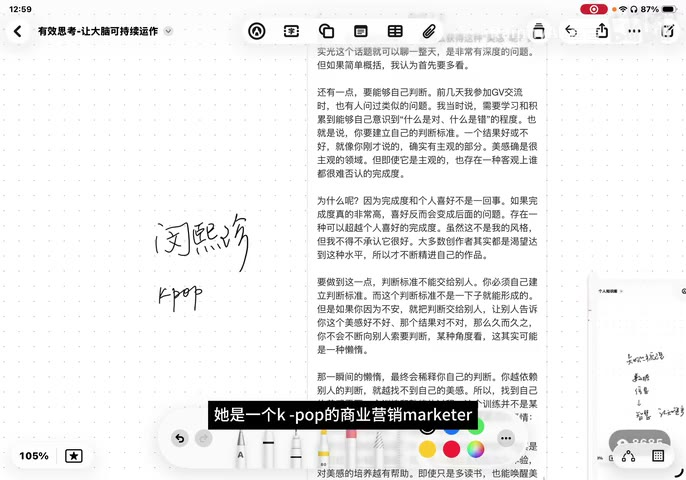

原视频 · 在线回看
点击后联网加载 B 站播放器；本地不下载整段视频。

原视频 · 在线回看
点击后联网加载 B 站播放器；本地不下载整段视频。
来源：AI 时代，如何进行有效思考？ · RainnyAn 言言 · 约 20 分钟 · 深度阅读
有时候，一件事情已经过去，我们还在脑子里反复回放：当时为什么那样说，别人到底怎样看我，下次会不会又发生。想得越久，细节似乎越清楚，心情却越来越沉重。也有另一种思考：同样从一件不顺利的事情开始，慢慢看清自己在意什么、当时受什么条件限制，最后知道接下来可以试着改变哪一处。两种活动都很费脑子，带来的结果却可能相差很大。
“有效思考”在这里讨论的，就是后一种可能：我们能否通过思考，更理解自己的需求，也更理解身边的人和事情，从而有依据地决定下一步？这个问题到了 AI 时代尤其值得问。一个工具可以迅速提供许多说法，但这些说法里，哪些和你眼前的生活有关，哪些需要继续追问，仍然需要有人判断。
面对 AI，很容易把注意力放在“它知道得比我多多少”上。可我们真正需要处理的事情，通常带着具体的个人条件：我想过怎样的生活，目前遇到了什么困难，这个选择对我有什么意义。即便一个工具能够生成问题，也不会因此自动知道你愿意为哪一种生活承担代价。你可以借助它整理信息、比较可能的选择，同时继续负责说明什么对自己重要。
这里不需要先证明人类拥有某种 AI 永远不可能具备的能力。对眼前的思考而言，更可用的起点是把“我”和“需要”说清楚。假如我们只问怎样获得成功，答案很容易堆满通用建议；当我们进一步知道自己看重的工作内容、相处方式和日常节奏，才有可能判断其中哪些建议值得采用。需求越具体，问题就越容易和实际处境联系起来。
理解自己可以从生活经验开始。哪些经历使你对一件事特别敏感？哪些时刻让你觉得自己很投入？曾经做过的重要选择，如今回看是否仍然认可？这些问题有助于发现自己的判断是怎样形成的。我们无需一开始就替整个人生找到一个完整解释，可以先从确实发生过的事情慢慢看起。
不过，个人经历也很容易被讲成一个过于顺手的故事。遇到新的事情，就用已经熟悉的说法把它解释过去；解释让自己舒服了，事情本身却没有发生变化。言言借“把自己作为方法”的讨论提醒这一点：个人经验提供了观察入口，同时也可能限制观察范围。如果一个解释能够毫不费力地套在所有事情上，就值得看看，它有没有漏掉具体条件。
和真实的人交往，能让这些条件变得可见。别人做出与你不同的选择，最初可能让你不解；当你听到对方经历了什么、担心什么、手里有什么资源，原来的判断才可能松动。你开始知道，同一件事放在另一种生活处境里，可以具有不同的意义。反过来，再回看自己的选择，也更容易发现哪些想法来自个人经历，哪些可能是更广泛的问题。
这个来回很重要。如果只从自己出发，我们可能把熟悉的感受当成人人如此；如果只接受外界对自己的解释，又可能忽略那些不符合解释的经验。理解自己和理解别人可以互相修正：从自身经验提出问题，到交往中发现差异，再带着差异重新理解自己。这里没有要求我们赞同每个人，只需要先给对方的实际处境留出被听见的机会。
认识自己之后，“需要”也会显得更有层次。有些需要涉及整个人想过的生活，例如喜欢安静、重视创造、希望与人保持连接；有些需要来自眼前的场景，例如当前工作要完成什么，某项兴趣想练到什么程度。社交平台上展示的山林隐居和精致生活，都可能让人向往，但看起来喜欢，与自己长期愿意承担那种生活的条件之间，还有一段需要了解的距离。
职业目标通常比较容易规定期限和结果，兴趣、关系和生活方式则未必如此。我们可以承认这些差别，再决定问题应该问到哪里。一个工作任务可能需要尽快选方案；对一种生活的向往，可能需要更多实际体验。把每一种需要都压成相同的效率问题，反而容易错过自己真正关心的部分。
言言用“so what”连接思考和行动。它可以理解为：如果我暂时接受这个解释，那么接下来有什么不同？这个追问让我们检查，一个判断有没有帮助自己看清可以采取的行动，或者至少弄明白还需要了解什么。如果思考一直停留在“为什么我总是这样”，每次回到同一个评价，却没有增加对情境的理解，就可能只是在重复消耗自己。
这里的行动不一定很大。继续观察某件事、找一个人认真谈谈、决定暂时不做某个选择，都可能是思考后的下一步。关键在于，前面的理解与后面的决定之间存在清楚关系：因为看到了什么条件，所以打算怎样回应。这样，我们还有机会从回应的结果里继续学习，原来的解释也可以被修正。
当然，“能推动行动”是这里采用的一种判断角度，无需用它给所有思想活动打分。欣赏作品时的一段遐想、暂时没有用途的阅读、尚未形成结论的疑问，都可能有价值。这个追问主要用来帮助那些已经让人困住的反复思虑，看看能否从中找到新的理解。把每个念头都变成待办事项，又会增加另一种压力。
如果想观察自己的想法，日记是一个容易开始的方法。把当天发生的事情、情绪和念头写下来，有时能发现它们之间的联系：在什么场景下不舒服，哪些事情让人愿意投入，某种担心是否反复出现。文字让原本散在脑子里的东西有了可以回看的形状，也让我们不必一直努力记住它们。
但写下来也可能产生相反效果。言言发现，自己有时写完以后，把不愉快记得更加牢固，仿佛又经历了一遍。尤其当日记从“我今天哪里做错了”开始，很容易变成一场只允许自己认错的审问。她因此尝试减少这种追问，用“今天要写点什么”这样的普通开头，让当时的念头慢慢出现。
这个变化保留了观察，减轻了必须立刻得出结论的要求。我们可以先写发生了什么、自己有什么感受，暂时不急着判断这些感受合不合理。日记未必每天都要形成一条深刻教训，也不需要每次都得到情绪明显改善的结果。它是一种个人尝试；如果写作持续让人更难受，就值得调整写法或暂停，不能因为日记被称为好方法，就要求自己一直以同样方式坚持。
思考也需要外部材料。如果眼前始终只有同一组经验和说法，就很难发现此前没有注意过的关系。言言以审美为例，谈到接触书籍、影视、美术、摄影和戏剧。接触这些作品，可以让我们注意空间怎样安排、结构怎样展开、一个细节怎样引起感受。这些具体经验慢慢积累起来，才可能支持自己的判断。
她引用的一段创作经验特别强调，判断标准需要自己逐渐建立。假如每次都先看别人给作品打多少分，再决定自己喜不喜欢，就很难知道究竟是哪一处打动了自己。作品受到欢迎，当然可以成为值得了解的信息，但还需要亲自看见：哪里做得细致，哪里没有说服自己，为什么会产生这样的感受。独立判断也允许改变；多看几次、听到新的解释以后，原来的看法可以继续调整。
外部材料很多，选择材料也需要一点主动性。言言尝试减少社交平台的随机推送，更有意识地关注自己选定的信息源。这里有一个值得分开的区别：减少无关干扰，可以让注意力更集中；只留下赞同自己观点的声音，却会减少修正判断的机会。筛选材料时，可以问它是否可靠、是否与当前问题有关，同时给不同的经验和解释留一个入口。
她还提出从想获得的结果倒推阅读安排。假如希望积累审美，就进一步问，接下来想接触什么类型的作品，准备投入多少时间，看完想理解哪一处。这样选择书、电影或展览，就有了与需求相关的理由。这个理由可以很宽松，例如想感受一种过去不熟悉的表达方式；它不要求每次欣赏都变成研究任务。它只是帮助我们少一点被动切换，多一点对正在接触什么的觉察。
选好材料以后，怎样让阅读留下理解？言言提出三个动作：关联、感受和评价。它们可以围绕同一件作品逐步展开，无需变成三份必须写完的作业。先注意作品让你想到什么，再辨认自己受到怎样的触动，最后尝试解释为什么形成某种判断。这样，一句“看完了”才有机会展开成自己的认识。
“关联”是把新材料和已经知道的事情放在一起。读到某个人物的选择，可能想起自己的经历，也可能想起另一本书里的相似情节。这个联系给理解提供了入口，但联系以后还可以多看一步：两种处境究竟哪里相像，哪些条件又不同？如果只因为表面熟悉，就用旧经验替代新的材料，反而可能错过作品真正特别的地方。
“感受”关注的是接触作品时实际发生的体验。某一处让你紧张，某一段让你轻松，也可能整件作品都让你无感。先承认这些体验，不必急着用专业术语包装。言言因此偏爱从读后感开始：读后感允许我们写自己受到怎样的触动，尚未建立完整分析框架，也有话可以说。感受属于个人经历；别人可以有不同感受，但差异不抹去你实际体验到的东西。
“评价”再往前走一步：我喜欢哪里，认为哪里有问题，理由是什么？它会把个人体验逐渐组织成可以讨论的判断。例如，觉得作品某一部分拖沓，还需要指出哪一部分，以及为什么那段内容让自己失去注意力。这样的评价既保留主观立场，也给别人留下理解和回应的对象。我们无需把喜欢变成人人都应喜欢，也可以听听别人为什么恰好被同一段吸引。
| 阅读后的动作 | 可以问自己的问题 | 需要保留的区别 |
|---|---|---|
| 关联 | 它让我想到什么已有经历或作品？ | 相似之处帮助理解，具体条件仍需分别看 |
| 感受 | 哪个位置让我紧张、轻松或无感？ | 个人体验真实存在，不代表所有人都会如此 |
| 评价 | 我认为哪里好或不好，为什么？ | 判断可以说明理由，也允许被新材料修正 |
前面一直在谈需求、问题和行动，到了休息时，需要允许这些要求暂时退后。言言介绍了自己参考的“4321 休息法”，其中有减少联网、暂时离开文字输入、接触周围环境和身体感受等安排。比较容易理解的一点，是让一直处理信息的状态暂时停一停，把注意力放到眼前的声音、触感或简单活动上。
这些是她采用的休息尝试，具体数字组合不必当作经过验证、人人适用的恢复方案。尤其没有必要一边休息，一边反复检查自己恢复了多少。每隔一会儿就问“这样够不够有效”，注意力又会回到表现和结果上。所谓“休息不验收”，给出的许可很简单：这一段时间可以只是休息，不必再交出一个让人满意的成果。
言言也尝试在起床后的第一小时不看手机，写一点晨间日记，让一天慢慢开始。这是她对日常节奏的调整，不能据此推出大脑必须花固定时长重新启动，或者所有人晨起看手机都会影响效率。值得保留的是那种安排方式：观察什么让自己一早就进入紧张、被催促的状态，再尝试给清晨留一点较少干扰的时间。
最后还有三条边界。首先，反思不必长期围绕缺点展开。如果每天都只问哪里做得不好，观察就容易变成单向挑错。我们同样可以注意自己怎样感受、为什么在某个场景特别紧张、哪种安排更舒服。这样仍然可以发现问题，只是不会在发现问题的同时，把整个人都判成有问题。
其次，要留意概念的使用范围。言言以流行的“奥德赛时期”说法为例：一个概念可能让我们觉得自己的迷茫被理解了，但如果此后所有不顺都被归入同一个阶段，就很难继续看见不同事情的具体原因。工作中的困难、关系里的冲突和对未来的不确定，可能彼此关联，也可能需要分别了解。概念可以帮助看见某一部分经验，剩下的部分仍然值得认真对待。
最后，思考得到的结论进入交流时，仍然需要给别人留位置。自己想了很久，不保证这个解释已经覆盖对方的生活。把结论说出来，也可以同时说出它基于什么经验、在哪些地方还不确定，再听对方怎样回应。这样的对话有时进展很慢，因为双方都需要放下立即证明自己正确的冲动，但它让思考继续接触真实的人。
有效思考从自己的经验和需要出发，通过与他人、作品和现实接触，逐步增加对处境的理解。需要行动时，再问这些理解怎样影响下一步；需要休息时，也允许暂时不追求结论。
为什么一个解释让自己感觉舒服，并不一定说明它解释了眼前的问题？为什么“我确实有这种感受”和“所有人都应该同意我的判断”需要分开？这两个区别，分别帮助我们向现实和向别人多留一点理解的空间。